散点图¶
import pandas as pd
import matplotlib.pyplot as plt
import matplotlib as mpl
import seaborn as sns
import numpy as np
import warnings
warnings.filterwarnings('ignore')# 忽略错误输出
%matplotlib inline
数据简介¶
案例使用的数据来自seaborn官网案例的tips数据，数据涉及多个变量：总消费、小费、性别、星期几等；由于使用sns.load_dataset("tips")命令出现错误，所以从Github上查询到数据，并保存到本地使用。
data = pd.read_csv('tips.csv')
data.head()
matplotlib方法¶
Axes.scatter(self, x, y,
s=None, # The marker size in points**2. Default is rcParams['lines.markersize'] ** 2
c=None, # The marker colors
marker=None,# The marker style
cmap=None,# A Colormap instance or registered colormap name. cmap is only used if c is an array of floats
norm=None, vmin=None, vmax=None, alpha=None, linewidths=None, *, edgecolors=None, plotnonfinite=False, data=None, **kwargs)
# 基本绘图
mpl.rcParams['font.sans-serif'] = 'Microsoft YaHei'
plt.style.use('ggplot')
fig,ax = plt.subplots(figsize=(8,4))
ax.scatter(data['total_bill'],data['tip'])
ax.set_xlabel('总账单')
ax.set_ylabel('小费')
ax.set_title('总账单与小费的散点图')
plt.show()
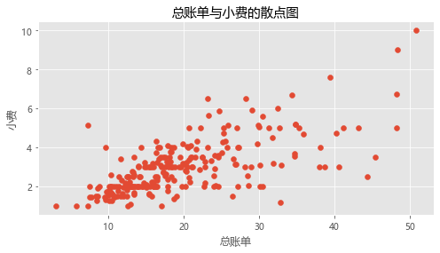
# 标记点大小
mpl.rcParams['font.sans-serif'] = 'Microsoft YaHei'
plt.style.use('ggplot')
fig,ax = plt.subplots(figsize=(8,4))
ax.scatter(data['total_bill'],data['tip'],s=data['tip']*20,alpha=0.5)
ax.set_xlabel('总账单')
ax.set_ylabel('小费')
ax.set_title('总账单与小费的散点图')
plt.show()
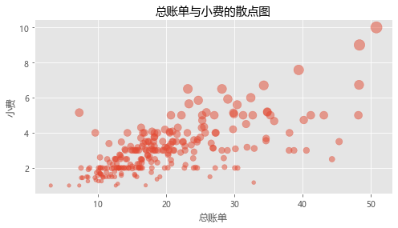
# 标记颜色
mpl.rcParams['font.sans-serif'] = 'Microsoft YaHei'
plt.style.use('ggplot')
fig,ax = plt.subplots(figsize=(8,4))
colors = np.random.randint(1,5,size=len(data))
ax.scatter(data['total_bill'],data['tip'],s=data['tip']*20,alpha=0.5,c=colors)
ax.set_xlabel('总账单')
ax.set_ylabel('小费')
ax.set_title('总账单与小费的散点图')
plt.show()
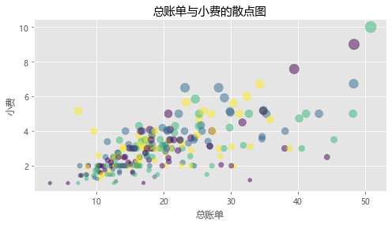
seaborn方法¶
seaborn.scatterplot(*, x=None, y=None,
hue=None, # Grouping variable that will produce points with different colors.
style=None,# Grouping variable that will produce points with different markers.
size=None,# Grouping variable that will produce points with different sizes.
data=None, palette=None, hue_order=None, hue_norm=None, sizes=None, size_order=None, size_norm=None, markers=True, style_order=None, x_bins=None, y_bins=None, units=None, estimator=None, ci=95, n_boot=1000, alpha=None, x_jitter=None, y_jitter=None, legend='auto', ax=None, **kwargs)
# 基础用法
fig,ax = plt.subplots(figsize=(8,4))
sns.scatterplot(x='total_bill',y='tip',data=data)
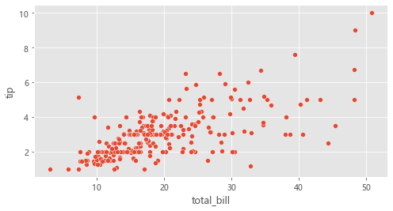
# 使用颜色标记不同time
fig,ax = plt.subplots(figsize=(8,4))
sns.scatterplot(x='total_bill',y='tip',hue='time',data=data)
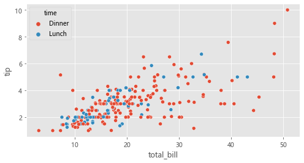
# 使用不同颜色、不同符号标记time
fig,ax = plt.subplots(figsize=(8,4))
sns.scatterplot(x='total_bill',y='tip',hue='time',style='time',data=data)
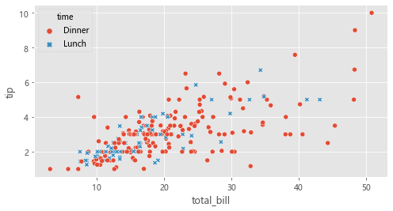
# 使用不同颜色标记day，不同符号标记time
fig,ax = plt.subplots(figsize=(8,4))
sns.scatterplot(x='total_bill',y='tip',hue='day',style='time',data=data)
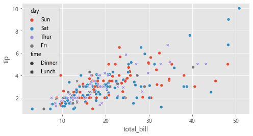
# 使用颜色标记不同time，并用tip的大小来设置标记点的大小
fig,ax = plt.subplots(figsize=(8,4))
sns.scatterplot(x='total_bill',y='tip',hue='time',size='tip',sizes=(15,200),data=data)
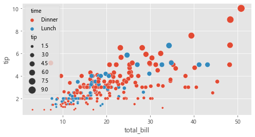
# 指定标记符号
fig,ax = plt.subplots(figsize=(8,4))
markers = {"Lunch": "s", "Dinner": "X"}
sns.scatterplot(data=data, x="total_bill", y="tip", style="time", markers=markers)
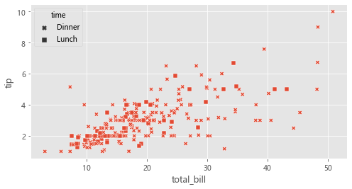
# 多图绘制：col必须在relplot里面设置
sns.relplot(
data=data, x="total_bill", y="tip",
col="time", hue="day",size='tip',sizes=(15,200),
kind="scatter"
)
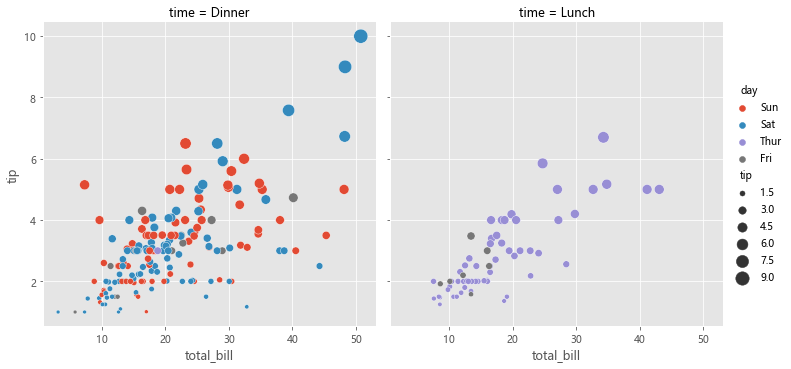
# 多图绘制：col和row
sns.relplot(
data=data, x="total_bill", y="tip",
row='sex',col="time", style="day",
size='tip',sizes=(15,200),
kind="scatter"
)
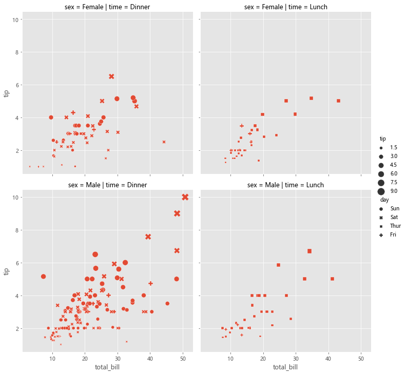